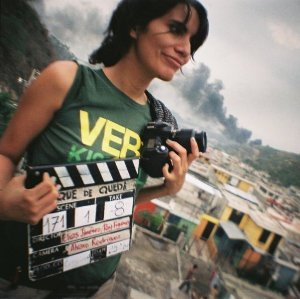

 Freidell Urbina
Nicaragüense, estudia la carrera de Comunicación social en la en la Universidad Centroamericana en Nicaragua y en la universidad Autónoma Metropolitana-México, donde obtuvo diversos premios en concursos interuniversitarios.
Ha cursado talleres de cinematografía, fotografía, documental social, documental de observación y producción audiovisual. Dirigió "Consuelo y Marcial" nominado a mejor corto documental centroamericano en el Festival Ícaro 2009; también dirigió el documental "Pasar de Lejos" sobre trabajo infantil; fue asistente de dirección del documental "MURDER", intensa obra sobre la penalización del aborto terapéutico. Participó como camarógrafa y fotógrafa en 11 cortometrajes ficción y en diferentes documentales de realizadores nicaragüenses. Como consultora o Free lance elaboró campañas de comunicación popular, productos audiovisuales y multimedia para organizaciones que trabajan en el área social. 8 años de experiencia laboral.
Participó en el programa de intercambio laboral de Sur a Sur de Fredskorpset – Noruega y Casa Comal de Guatemala; donde se ha desempeñado como Responsable de Medios e Información del Festival Ícaro cine y video en Centroamérica; de la misma manera impartió la cátedra de Introducción a la Producción Audiovisual en la Escuela de Cine y TV de Casa Comal, en la cual asesoró a los estudiantes en la realización de 4 cortometrajes. Su actividad más reciente fue la Coordinación de Producción de la película "FE" coproducida por Casa Comal y ceibita films y fue asistente en fotografía en la Película "Toque de Queda" otra producción de Casa Comal, Arte y Cultura de Guatemala. A finales del 2010 realizó el cortometraje "El Chechereque" donde tuvo créditos en Guión, Dirección y Dirección de Fotografía.